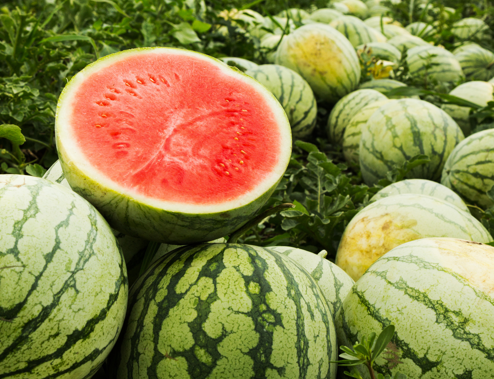
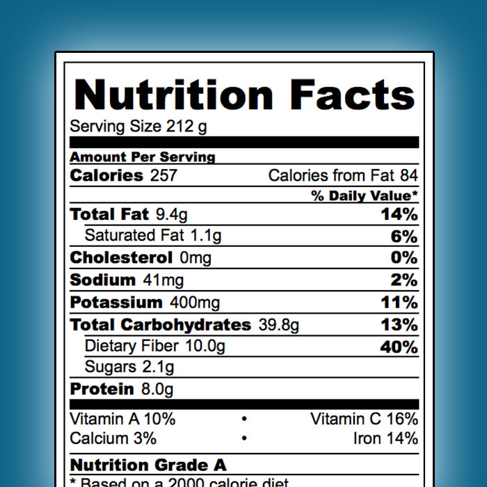
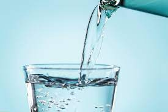
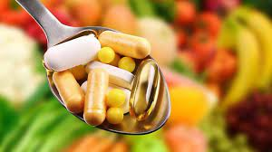
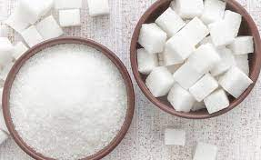
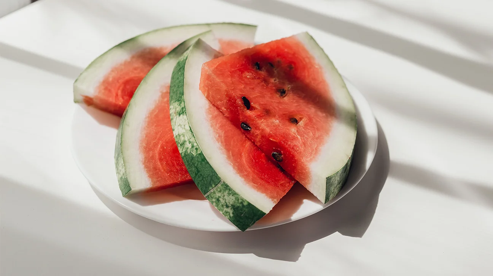

Pros
Watermelon gives you a lot of energy (calories) and it includes a lot of water.

Cons
The watermelon contains a lot of sugar, so if you want to eat it try to put a logical limit.


Nutritional value
Watermelon nutritional values (100g) - 30 cal, 0.2g of fat, 0.6g of protein and 7.5g of carbs.

Summary
For sum up, watermelon is a great fruit (my favorite, if you didn't notice). I totally recommend.
Keep scroll down to see more exciting facts.
The writer of this website isn't a doctor. The website content doesn't replace a medical advice.
Point your mouse here to find out exciting facts!
Watermelon contains 90% of water!

Watermelon contains a lot of vitamins!

Watermelon contains 10% of sugar!

Watermelon can prevent heart disease!
Its juice can reduce muscle pain!

Watermelon prevents dehydration!
There are yellow watermelons!

Watermelon is the top summer fruit!
